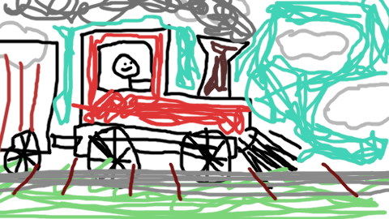
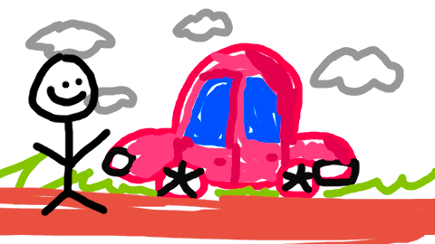
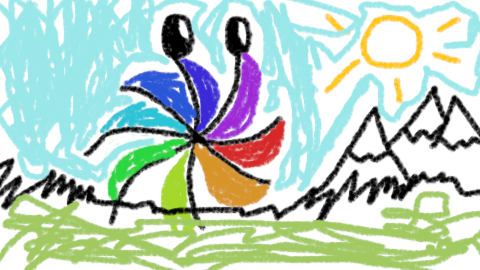
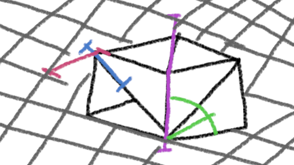
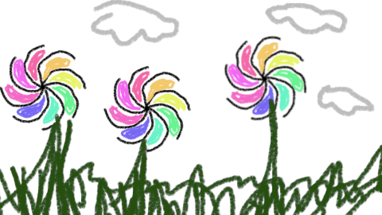
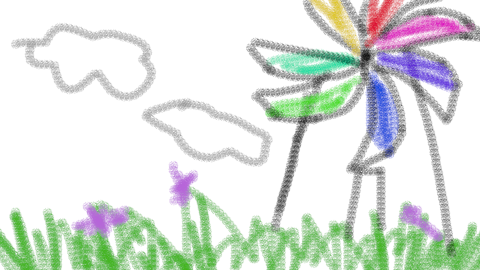

note: choo choo
what is this?
a reincarnation of the now gone yuzu emulator; stripped down to the bare minimal requirements
let your games be played at the highest of resolutions
may minimalism prevail in the face of AGILE-ism!
feel free to lend a hand, two, or even three! all you need is c++
>> release: 2026-03-27 (click me) <<

note: unix users are known to spontaneously assemble cars... we don't repair cars
hello pookies, this is the second stable build, your usual dose of dynarmic improvments and whatnot, i expect to do atleast a weekly stable release if possible :) PORTABLE MODE ON BY DEFAULT: this means you can use user folder naw fixes for audctl wrong init fixes for wrong ipc responses some fw22 fixes so it doesnt outright crash invalidated ALL shader cache (sorry) build fixes fun minigames for "surprise me" ui spinny logo on about
>> release: 2026-03-20 (click me) <<

note: the citrus bug is frolicking in the citrus mountains, and they may find mountains made out of lemons
hello pookies this is the first stable build for citron neo spinny logo: weee new ISBERD implementation and gpu alloc ctx new improved dynarmic: improved cpu performance for totk and other cpu intensive games new gpu decoder that's homogenous: faster shader compilation coalesced gpu pagetables: faster pagetable resolution, faster gpu mem access fix the game list taking too long to load port to freebsd mario galaxy lag fixed new forked mod download/compat list expect increased CPU performance and very decreased CPU latency (basically lesser loading times and less stutter on CPU-intensive areas) continuity of android support is on the line, as nobody here really wants to update it as for the future of the project, the focus is on vulkan only; not necesarily making all games work astoundingly, but rather make the ones that work already work even better; i.e do fewer things right than to do many things wrong focus will primarily shift on maintenance of Dynarmic-GPLv3 as Citron NEO will be ground-zero for any improvements to Dynarmic-GPLv3 coming forward NOTE: Dynarmic-GPLv3 is an improved version of dynarmic which is licensed under gplv3, it significantly improves performance w.r.t to older dynarmic and is our new CPU backend!

note: fused multiply addition rounding modes is guaranteed fun
fqa
here are some frequently questioned answers? ok!
where do i get gamesmust be from your switch! any other methods are punishable by death
why does this look like a website from the 90's?why not
can i play firmware X?up to firmware 21.2.0 is supported, yes
minimum requirements?atleast 6gb of ram
a gt 710 2gb ddr2 or similar
windows 10 / android 13 upwards
core 2 quad Q6600, or superior
opengl support?not required, most of the focus goes on to vulkan
ios port?PRs welcome
why is everything in lowercase?why not
why does this look like 9front?because their website IS COOL and AMAZING

note: frolicking in the citron fields and you may find some citrus fruits

note: it is be advisable to make a windmill out of fruits and then eat it